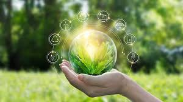

GREEN TECH
También conocidas como tecnologías verdes, estas son las que se utilizan para producir bienes y serviciones con menores emisiones de carbono. El concepto de "Green Tech" hace referencia a todo aquel avance tecnológico que se lleva de a cabo de manera sostenible
Cabe destacar, que esto no significa que Green Tech sea sinónimo de tecnología que no contamina; pues es inevitable su impacto en ciertas ocasiones. El punto importante que diferencia las empresas greentech del resto, es que trabajan en avances diseñados para contaminar en la mínima medida posible y no perjudicar el medio ambiente desde el inicio del proceso de creación de la tecnología.
Remontando a la necesidad de reducir las emisiones de carbono. las Green Tech fueron originadas para prevenir e innovar un consumo más eficiente y que fuera menos contaminante. Comienza a tomar relevancia en 1970 cuando se hace conciencia acerca de los problemas de contaminacion ambientales.
Al reducir la contaminación del aire y el agua, la tecnología verde tiene un impacto positivo en la salud pública. Menos contaminantes significa un aire más limpio y, por lo tanto, menores tasas de enfermedades respiratorias y cardíacas.
La tecnología verde impulsa la innovación y crea nuevas oportunidades de empleo. Desde la investigación y desarrollo hasta la fabricación y la gestión, abre un amplio abanico de posibilidades laborales en diversos sectores.
Actualmente las tecnologias verdes han tenido un alcance bastante basto, principalmente en el desarrollo tecnologico más popular como lo son los siguientes conceptos:
Sostenibilidad con IoT
Con la mejora de la sensorización de mundo físico se consigue mejorar la toma de decisiones en beneficio de la eficiencia y el medio ambiente. Por ejemplo, el manejo en que las IA tienen más potencia y reaccionan con un mejor contenido de información y procesamiento en tiempo real.Programas ecológicos
Organizaciones como "GreenTech Americas" buscan constantemente la mejora e impulsar tecnologías verdes ambientales como la generación de energía por medio de energías renovables, influyendo incluso en el costo para operativos.Edificación y construcción
Además de los puntos ya mencionados también las tecnología verdes entran en la rama de edificación, arquitectura y construcción; todo para dejar una huella ambiental más amigable.
Conocemos como "Publicidad Green" aquella publicidad que tiene com objetivo el generar conciencia en la gente del por que deberian estar apoyando movimientos a favor del planeta, de igual manera generar cada vez mas acciones propias en la gente que se hagan pensando a favor del planeta. Nosotros la dividimos en 2, Green que Informa Y Green que genera.
Las grandes empresas tecnológicas estadounidenses se han unido con el objetivo de producir para 2025 hasta 60 gigavatios con energías renovables. En España, Telefónica también está cumpliendo objetivos similares con su "Proyecto Global de Eficiencia Energética 2010-2020".
A día de hoy, la tecnología está en todo lo que hacemos de manera cotidiana, tanto en el ocio, como en el trabajo, pasando por el ámbito doméstico. Al adquirir dispositivos y servicios de las principales empresas tecnológicas, fijarnos en la eficiencia energética que reportan a nuestro hogar, pero pocas veces nos preocupamos por cómo estas lidian con los problemas medioambientales, y sobre todo, por cómo intentan ayudar a conservar el medio ambiente. Dado que cada vez debe ser una prioridad mayor para todos, veamos qué empresas están apoyando de manera activa la energías renovables.
Como se dijo anteriromente es aquella que es utilizada para poder crear conciencia en la gente, crear acciones que favorezcan el planeta, está sin dejar su importancia a un lado es la encargada de que hoy en dia cada vez más la gente tenga más demanda hacia las empresas de productos o servicios amigables con el medio ambiente, existen investigacion que demuestran que el 35% de las personas estarían díspuestos a incluso pagar un poco mas en este tipo de productos.
Como su nombre lo indica, es aquella publicidad, que normalmente empresas de sector privada se comprometen en hacer una donación por cada vez que este tipo de publicidad sea vista, compartida, aapoyada o inlcuso algunas aceptan donaciones voluntarias, incluso exite entretenimiento con el objetivo de que todo lo que se genere sea utilizado en este tipo de tareas.
49 millones de toneladas de basura electronica fueron tiradas en en 2016, esto equivale a 4,500 Torres Eifel, para 2023 fueron mas de 60 millones de toneladas, solo el 17% de estos residuos serán recogidos y reciclados de manera adecuada, el resto de basura, termina siendo toxica para el medio ambiente y finalmente afectando cada vez mas nuestra calidad de vida
Esta más que claro que se necesita hacer un cambio importante, a continuacion una lista de las empresas que hoy en dia son de las mas verdes y nos serviran como ejemplo en el ambito tecnológico.
Por eso proponemos la implementacion de leyes obligatorias para las naciones sobre su impacto en el medio ambiente, de manera mas estrica para aquellos que generen tanta basura electronica.